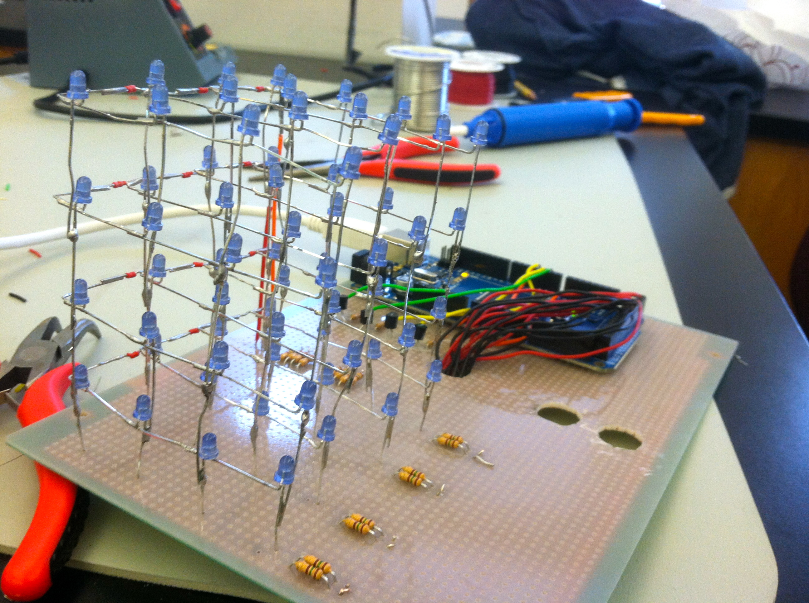
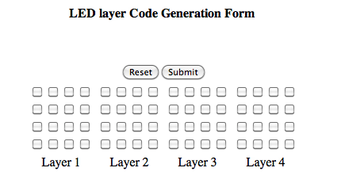
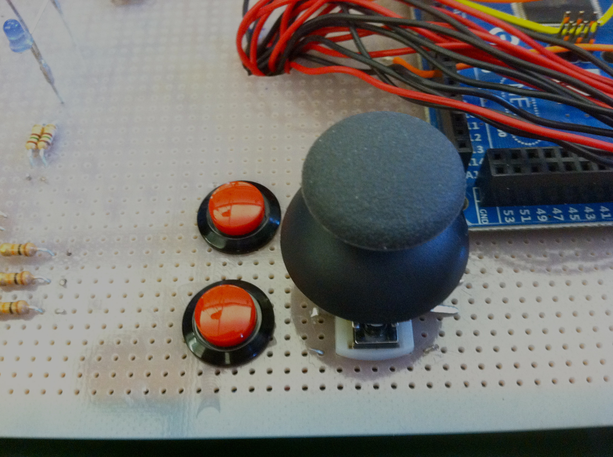

This is the code for my 4x4x4 LED cube
Created By Chris P.
This project is a cube of 64 LEDs that can be programmed to make all kinds of interesting animations and patterns! Its circuitry allows for LEDs to be individually addressed in the programming.
I have made an HTML/PHP program that utilizes checkboxes to write Arduino compatible code to light up LEDs. This program saves time, and is also pretty neat!
I have also added a Joystick and two pushbuttons as input devices that can be used in any way. I'm attempting to make Snake in 3D with the Joystick, but I hope to eventually publish this project as an open source kit.
Here's a video of me presenting my project.
Here's a video of the beginnings of the snake program.